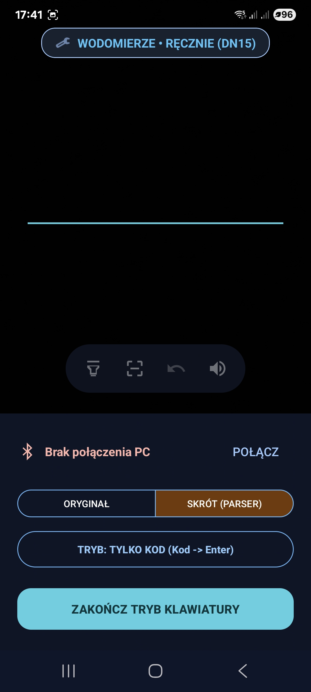
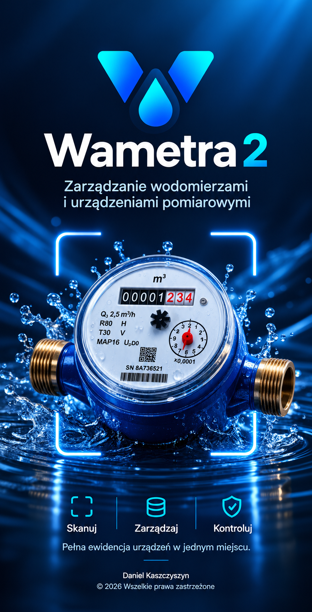
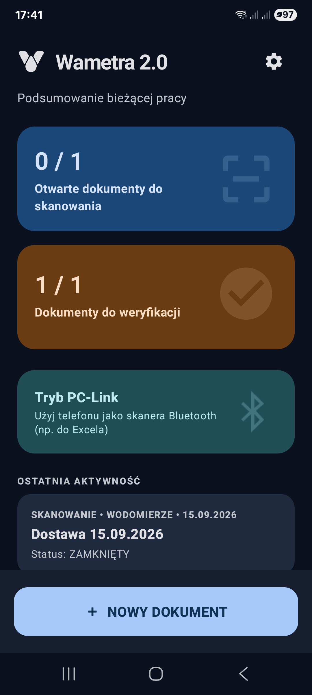
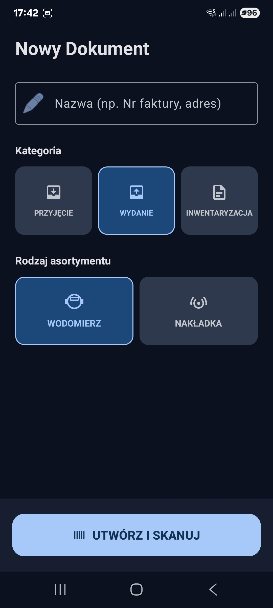
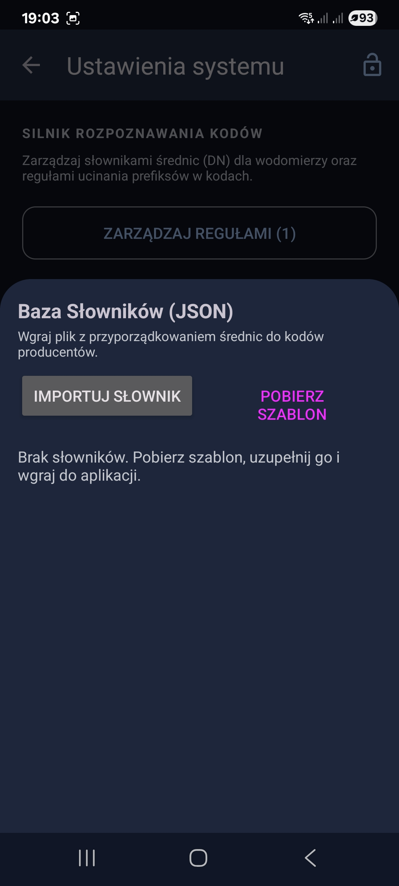
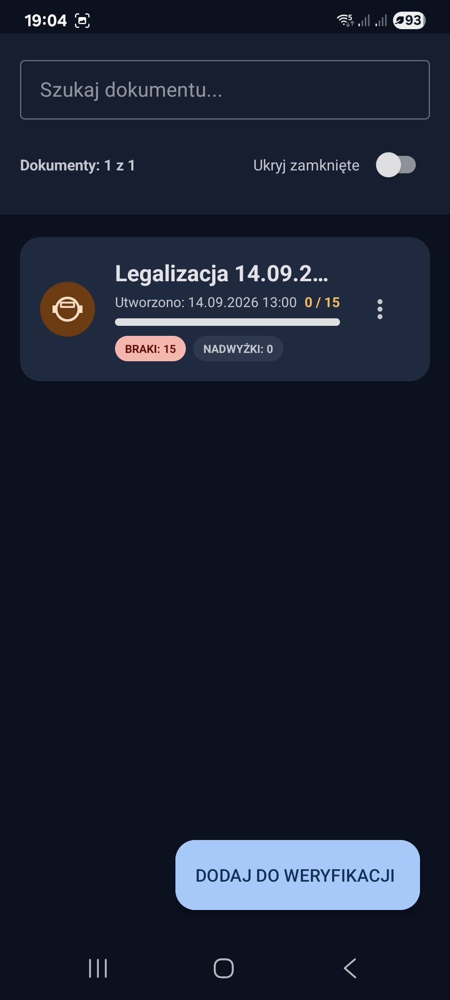
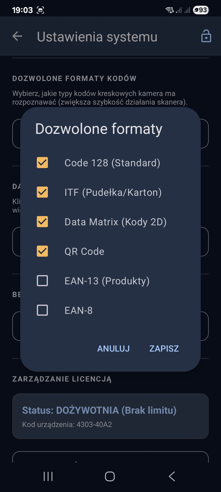
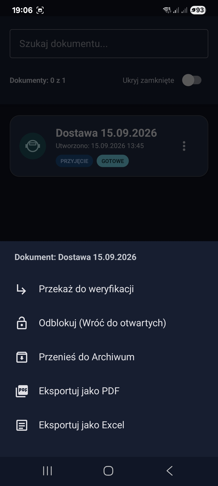
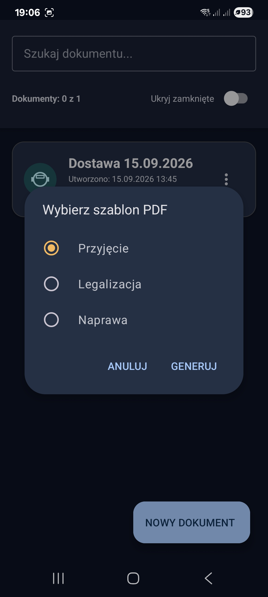

Skanuj wodomierze i nakładki radiowe, twórz dokumenty PZ/WZ oraz przeprowadzaj inwentaryzację — wszystko z poziomu jednego urządzenia, bez komputera. Gdy potrzebujesz wprowadzać dane wprost do Excela, włącz tryb PC-Link i zamień telefon w profesjonalny skaner Bluetooth.


Każdy element interfejsu został stworzony z myślą o szybkości pracy na magazynie.
Połącz smartfon z komputerem przez Bluetooth i wprowadzaj zeskanowane kody wprost do Excela — bez dodatkowego oprogramowania.

Twórz Przyjęcia (PZ), Wydania (WZ) lub Inwentaryzacje jednym dotknięciem.

Odczyt i analiza kodów w czasie rzeczywistym — zero opóźnień nawet przy dużym wolumenie.

Sprawdzaj zgodność urządzeń przysłanych z legalizacji i napraw

Konfiguruj typy urządzeń, kody i parametry — dopasuj aplikację do własnych procesów.

Generuj listy inwentaryzacyjne, eksportuj dane do Excela i twórz gotowe raporty w PDF.


Aplikacja jest dystrybuowana w modelu B2B. Wypełnij formularz, aby uzyskać dostęp, licencję oraz instrukcję wdrożenia.
Twoja wiadomość została wysłana. Odezwiemy się na podany adres e-mail.
Wystąpił błąd podczas wysyłania formularza. Spróbuj ponownie.